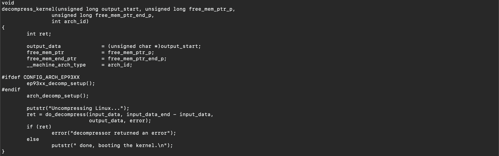
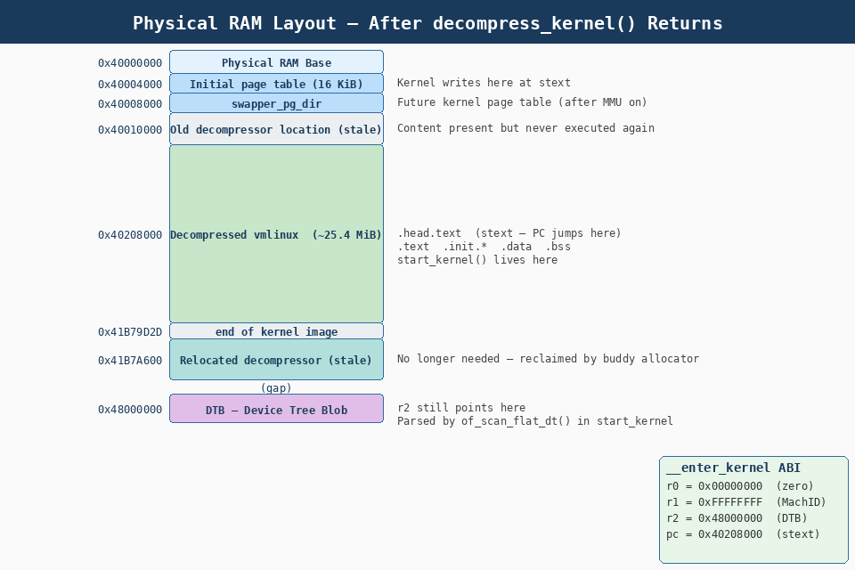

1. Calling decompress_kernel()
we call the decompress_kernel() symbol in boot/compressed/misc.c which in turn calls do_decompress() which calls __decompress() which will perform the actual decompression.
This is implemented in C and the type of decompression is different depending on Kconfig options: the same decompressor as the compression selected when building the kernel will be linked into the image and executed from physical memory. All architectures share the same decompression library. The _decompress() function called will depend on which of the decompressors in lib/decompress*.c that was linked into the image. The selection of decompressor happens in arch/arm/boot/compressed/decompress.c by simply including the whole decompressor into the file.
All the variables the decompressor needs about the location of the compressed kernel are set up in the registers before calling the decompressor.
With the C runtime ready, execution calls into misc.c:
mov r0, r4 @ r0 = ZRELADDR (output start = 0x40208000)
mov r1, sp @ r1 = malloc base (stack top)
add r2, sp, #MALLOC_SIZE @ r2 = malloc end (+ 64 KiB)
mov r3, r7 @ r3 = architecture ID
bl decompress_kernel @ call into misc.c
(gdb) si
634 in /usr/src/kernel/arch/arm/boot/compressed/head.S
1: x/10i $pc
=> 0x41c7bf78 <not_relocated+56>: bl 0x41c7c6c4 <decompress_kernel>
0x41c7bf7c <not_relocated+60>: add r1, pc, #120 @ 0x78
0x41c7bf80 <not_relocated+64>: ldr r2, [r1]
(gdb)The call chain inside misc.c:
-
decompress_kernel(output, heap_base, heap_end, arch_id, delta) -
→
do_decompress(input_data, input_len, output, error) -
→
__decompress(input, in_len, NULL, NULL, output, 0, NULL, error) -
→ Format-specific decompressor from
lib/decompress_*.c(gzip, lzma, xz, lzo, lz4 — whichever was selected in Kconfig)
(gdb)
decompress_kernel (output_start=1075871744, free_mem_ptr_p=1114323784,
free_mem_ptr_end_p=1114389320, arch_id=-1)
at /usr/src/kernel/arch/arm/boot/compressed/misc.c:138
warning: 138 /usr/src/kernel/arch/arm/boot/compressed/misc.c: No such file or directory
1: x/10i $pc
=> 0x41c7c6c4 <decompress_kernel>:
ldr r12, [pc, #168] @ 0x41c7c774 <decompress_kernel+176>
0x41c7c6c8 <decompress_kernel+4>: push {lr} @ (str lr, [sp, #-4]!)
(gdb)-
__gunzip()
(gdb)
__gunzip (fill=0x0, flush=0x0, out_len=-1075871745, pos=0x0, buf=0x41c82e6c "\037\213\b",
len=10681486,
out_buf=0x40208000 "\036\231;?DWX\310;+\372ۏp\336X+\373\3751\026\2034m,lq\350W]s\237\r\034
\262$\374\271Θ\261,\231b\003_:\263/O\203uӥR\316/J\371\336qW~{\233\370\005j\314\342KOl\023/W\32
7\355\245}6\361\350R\251\313e\323\370m\021\a\2224\357\214\337S_$\222~\226_\306d\236]\245\221\0
17;h\354'ɱ\233r\314\330\301\277\353Ŀ\246憦\261l\335\312v\n\310\v\021q \031\343:\202\366\262\26
5B\332C\271>\004\366\262\260\324m\032c\222g\202/\001\367\024\270G\351\320o\306=M\3633#֟yh\275U\
251b\337\377pu\037\037\334r\365\261\376\244", <incomplete sequence \315>...,
error=0x41c7c670 <error>) at /usr/src/kernel/lib/decompress_inflate.c:60
warning: 60 /usr/src/kernel/lib/decompress_inflate.c: No such file or directory
1: x/10i $pc
=> 0x41c7ed28 <do_decompress+20>: bne 0x41c7ed40 <do_decompress+44>
0x41c7ed2c <do_decompress+24>:
ldr r0, [pc, #620] @ 0x41c7efa0 <do_decompress+652>
0x41c7ed30 <do_decompress+28>: add r0, pc, r0
0x41c7ed34 <do_decompress+32>: blx r3
0x41c7ed38 <do_decompress+36>: mvn r6, #0
0x41c7ed3c <do_decompress+40>: b 0x41c7ef94 <do_decompress+640>
0x41c7ed40 <do_decompress+44>: cmp r0, #0
0x41c7ed44 <do_decompress+48>: mov r5, r0
0x41c7ed48 <do_decompress+52>: movne r6, r1
0x41c7ed4c <do_decompress+56>: movne r10, r0
(gdb)(gdb)
0x41c7d4e4 66 in /usr/src/kernel/lib/zlib_inflate/inflate.c
1: x/10i $pc
=> 0x41c7d4e4 <zlib_inflateInit2+12>: ldr r2, [r0, #32]
0x41c7d4e8 <zlib_inflateInit2+16>: cmp r1, r3
0x41c7d4ec <zlib_inflateInit2+20>: str r3, [r0, #24]
0x41c7d4f0 <zlib_inflateInit2+24>: rsblt r1, r1, #0
0x41c7d4f4 <zlib_inflateInit2+28>: asrge r3, r1, #4
0x41c7d4f8 <zlib_inflateInit2+32>: sub r12, r1, #8
0x41c7d4fc <zlib_inflateInit2+36>: addge r3, r3, #1
0x41c7d500 <zlib_inflateInit2+40>: str r2, [r0, #28]
0x41c7d504 <zlib_inflateInit2+44>: cmp r12, #7
0x41c7d508 <zlib_inflateInit2+48>: str r3, [r2, #8]
(gdb)|
Enable This is the cheapest possible smoke-test that |
After decompression, ~25.4 MiB of uncompressed kernel code and data is now at
0x40208000.

2. Cache Flush, Cache Off, and __enter_kernel
We then jump to the symbol __enter_kernel which sets r0, r1 and r2 as the boot loader would have left them, unless we have an attached device tree blob, in which case r2 now points to that DTB. We then set the program counter to the start of the kernel, which will be the start of physical memory plus TEXT_OFFSET, typically 0x00008000 on a very conventional system, maybe 0x20008000 on some Qualcomm systems.
We are now at the same point as if we had loaded an uncompressed kernel, the vmlinux file, into memory at TEXT_OFFSET, passing (typically) a device tree in r2.
2.1. Flush and Turn Off Caches
The decompressor flushes the D-cache over the newly-written kernel image (to make it coherent for instruction fetch), then disables the MMU and caches as required by the ARM booting ABI:
get_inflated_image_size r1, r2, r3 @ r1 = end address of inflated kernel
mov r0, r4 @ r0 = start = ZRELADDR
bl cache_clean_flush @ flush D-cache over entire kernel image
bl cache_off @ disable MMU, I-cache, D-cache638 in /usr/src/kernel/arch/arm/boot/compressed/head.S
1: x/10i $pc
=> 0x41c7bfa4 <not_relocated+100>: mov r0, r4
0x41c7bfa8 <not_relocated+104>: add r1, r1, r0
0x41c7bfac <not_relocated+108>: bl 0x41c7c480 <cache_clean_flush>
0x41c7bfb0 <not_relocated+112>: bl 0x41c7c400 <cache_off>
0x41c7bfb4 <not_relocated+116>: mrs r0, SPSR
0x41c7bfb8 <not_relocated+120>: and r0, r0, #31
0x41c7bfbc <not_relocated+124>: cmp r0, #26
0x41c7bfc0 <not_relocated+128>: bne 0x41c7c660 <__enter_kernel>
0x41c7bfc4 <not_relocated+132>: movw r0, #1644 @ 0x66c
0x41c7bfc8 <not_relocated+136>: movt r0, #0cache_off selects the correct disable sequence from proc_types based on the
CPU ID, invalidates TLBs where applicable, and issues DSB/ISB barriers.
=> 0x41c7bfb4 <not_relocated+116>: mrs r0, SPSR
0x41c7bfb8 <not_relocated+120>: and r0, r0, #31
0x41c7bfbc <not_relocated+124>: cmp r0, #26
0x41c7bfc0 <not_relocated+128>: bne 0x41c7c660 <__enter_kernel>
(gdb)(gdb)
not_relocated () at /usr/src/kernel/arch/arm/boot/compressed/head.S:644
644 in /usr/src/kernel/arch/arm/boot/compressed/head.S
1: x/10i $pc
=> 0x41c7bfb4 <not_relocated+116>: mrs r0, SPSR
0x41c7bfb8 <not_relocated+120>: and r0, r0, #31
0x41c7bfbc <not_relocated+124>: cmp r0, #26
0x41c7bfc0 <not_relocated+128>: bne 0x41c7c660 <__enter_kernel>
0x41c7bfc4 <not_relocated+132>: movw r0, #1644 @ 0x66c
0x41c7bfc8 <not_relocated+136>: movt r0, #0
0x41c7bfcc <not_relocated+140>: add r0, r0, pc
0x41c7bfd0 <not_relocated+144>: bl 0x41c7f308 <__hyp_set_vectors>
0x41c7bfd4 <not_relocated+148>: hvc 0
0x41c7bfd8 <not_relocated+152>: b 0x41c7bfd8 <not_relocated+152>
(gdb)
^C
Thread 4 received signal SIGINT, Interrupt.
[Switching to Thread 1.4]
0xc031a308 in ?? ()
1: x/10i $pc
=> 0xc031a308: bx lr
0xc031a30c: nop {0}
0xc031a310: bx lr
0xc031a314: mrc 15, 0, r3, cr0, cr0, {1}
0xc031a318: lsr r3, r3, #16
0xc031a31c: and r3, r3, #15
0xc031a320: mov r2, #4
0xc031a324: lsl r2, r2, r3
0xc031a328: mcr 15, 0, r0, cr7, cr10, {1}
0xc031a32c: add r0, r0, r2
(gdb)After the decompressor has finished, the kernel image is decompressed in RAM at ZRELADDR (typically 0x40208000). Flow of execution is as follows:
-
cache_clean_flush()
-
cache_off()
-
__enter_kernel()
(gdb)
640 in /usr/src/kernel/arch/arm/boot/compressed/head.S
1: x/10i $pc
=> 0x41c7bfac <not_relocated+108>: bl 0x41c7c480 <cache_clean_flush>
0x41c7bfb0 <not_relocated+112>: bl 0x41c7c400 <cache_off>
0x41c7bfb4 <not_relocated+116>: mrs r0, SPSR
0x41c7bfb8 <not_relocated+120>: and r0, r0, #31
0x41c7bfbc <not_relocated+124>: cmp r0, #26
0x41c7bfc0 <not_relocated+128>: bne 0x41c7c660 <__enter_kernel>
0x41c7bfc4 <not_relocated+132>: movw r0, #1644 @ 0x66c
0x41c7bfc8 <not_relocated+136>: movt r0, #0
0x41c7bfcc <not_relocated+140>: add r0, r0, pc
0x41c7bfd0 <not_relocated+144>: bl 0x41c7f308 <__hyp_set_vectors>
(gdb)2.2. cache_clean_flush() & cache_off()
cache_clean_flush() calles the armv7_mmu_cache_flush() and cache_off() calles the armv7_mmu_cache_off() to flush the cache by detecting the CPU type using proc_types.
2.3. __enter_kernel — Final Register Restore and Jump
(gdb)
__enter_kernel () at /usr/src/kernel/arch/arm/boot/compressed/head.S:1435
1435 in /usr/src/kernel/arch/arm/boot/compressed/head.S
1: x/10i $pc
=> 0x41c7c660 <__enter_kernel>: mov r0, #0
0x41c7c664 <__enter_kernel+4>: mov r1, r7
0x41c7c668 <__enter_kernel+8>: mov r2, r8
0x41c7c66c <__enter_kernel+12>: mov pc, r4-
move pc,r4 jumps to 0x40208000 which is the start of the uncompressed kernel image.
(gdb) info registers r4
r4 0x40208000 1075871744
(gdb)-
Enter in the __enter_kernel() function
0x40208000 in ?? ()
1: x/10i $pc
=> 0x40208000: bl 0x40312f60
0x40208004: mrs r9, CPSR
0x40208008: eor r9, r9, #26
0x4020800c: tst r9, #31
0x40208010: bic r9, r9, #31
0x40208014: orr r9, r9, #211 @ 0xd3
0x40208018: bne 0x40208030
0x4020801c: orr r9, r9, #256 @ 0x100
0x40208020: add lr, pc, #12
0x40208024: msr SPSR_fsxc, r9It is difficult to debug the kernel code in gdb without debug symbols. So we need to add the debug symbols to the kernel code.
(gdb) add-symbol-file build/vmlinux 0x40208000
add symbol table from file "build/vmlinux" at
.text_addr = 0x40208000
(y or n) y
Reading symbols from build/vmlinux...
(gdb) si
Enable debuginfod for this session? (y or [n]) n
kmalloc_noprof (size=128, flags=3264) at /usr/src/kernel/include/linux/slab.h:878
This GDB supports auto-downloading debuginfo from the following URLs:
<https://debuginfod.ubuntu.com>
Debuginfod has been disabled.
To make this setting permanent, add 'set debuginfod enabled off' to .gdbinit.
warning: 878 /usr/src/kernel/include/linux/slab.h: No such file or directory
1: x/10i $pc
=> 0x40312f60 <audit_log_exit+3928>: mrs r4, CPSR
0x40312f64 <audit_log_exit+3932>: and r4, r4, #31
0x40312f68 <audit_log_exit+3936>: movw r5, #36832 @ 0x8fe0
0x40312f6c <audit_log_exit+3940>: movt r5, #367 @ 0x16f
0x40312f70 <audit_log_exit+3944>: str r4, [pc, r5]
0x40312f74 <audit_log_exit+3948>: mrs r4, CPSR
0x40312f78 <audit_log_exit+3952>: and r4, r4, #31
0x40312f7c <audit_log_exit+3956>: movw r6, #36812 @ 0x8fcc
0x40312f80 <audit_log_exit+3960>: movt r6, #367 @ 0x16f
0x40312f84 <audit_log_exit+3964>: add r6, r6, pc
(gdb)-
Here is the start_kernel() function
0xc1900b48 in start_kernel ()
1: x/10i $pc
=> 0xc1900b48 <start_kernel+8>: movt r0, #49568 @ 0xc1a0
0xc1900b4c <start_kernel+12>: sub sp, sp, #36 @ 0x24
0xc1900b50 <start_kernel+16>: mov r3, #0
0xc1900b54 <start_kernel+20>: str r3, [sp, #28]
0xc1900b58 <start_kernel+24>: bl 0xc032c1b4
0xc1900b5c <start_kernel+28>: bl 0xc1904534 <smp_setup_processor_id>
0xc1900b60 <start_kernel+32>: bl 0xc195b168 <init_vmlinux_build_id>
0xc1900b64 <start_kernel+36>: bl 0xc1916d70 <cgroup_init_early>
0xc1900b68 <start_kernel+40>: cpsid i
0xc1900b6c <start_kernel+44>: movw r7, #24832 @ 0x6100
(gdb)Now start_kernel() will setup the MMU and other things and boot the kernel.
[ 0.000000] Booting Linux on physical CPU 0x0
[ 0.000000] Linux version 6.12.56 (oe-user@oe-host) (arm-poky-linux-gnueabi-gcc (GCC) 14.3.0, GNU ld (GNU Binutils) 2.44.0.20250715) #1 SMP PREEMPT Wed Oct 29 13:09:02 UTC 2025
[ 0.000000] CPU: ARMv7 Processor [414fc0f0] revision 0 (ARMv7), cr=10c5387d
[ 0.000000] CPU: div instructions available: patching division code
[ 0.000000] CPU: PIPT / VIPT nonaliasing data cache, PIPT instruction cache